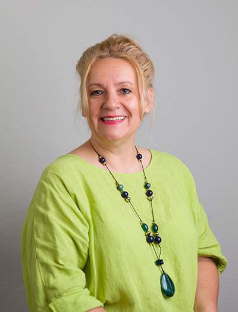
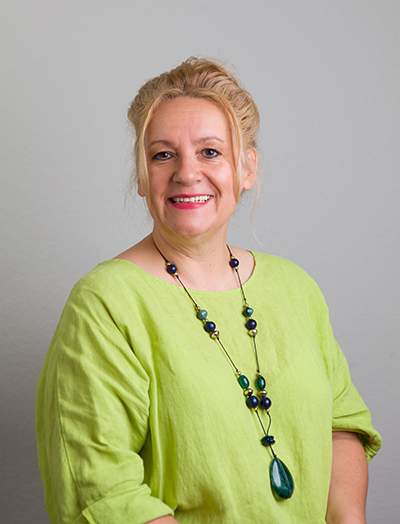

Cornelia Gilbert
Spiritual Life Coaching
spir·it/ˈspirit/ …
Latin: spirare = breathe
Work:
Cornelia provides professional and Spiritual Life Coaching during times of challenges.
This could be in the following areas:
⦁ Pandemic Fatigue
⦁ Stress Relief
⦁ Anxiety Reduction
⦁ Energy Cleansing
⦁ Spiritual Crisis
⦁ Burnout Prevention
⦁ Conflict Management
⦁ Confidence Coaching
⦁ Loss and Grief
⦁ Personal Growth
Read More
_____________________________________________

Let there be rock!
« Cornelia has a unique metaphysical approach towards Life Coaching that she complements with her warm and healing presence. »
Anne Geraghty,
Psychotherapist and Author of ‹How Loving Relationships Work: Understanding Love's Living Force›
Cumbria, UK
« Cornelia has a special gift to coalesce her energies with nature and the divine principle. Therefore, she mediates the truth of the Higher Self. This is how people, who come into contact with her, are able to profoundly connect with their hearts. »
Pat Edith Werner
Psychotherapist and Medium
Marbella, Spain
Read More...
_____________________________________________
Philosophy:
Cornelia subscribes to a holistic approach. She trained mostly in Europe and uses a variety of techniques, to name a few: cognitive behavioral coaching, breath work, therapeutic metaphors, guided visualization, guided imagery, thought refocusing, positive affirmation, gratitude and appreciation …
Read More...
_____________________________________________

Biography:
I was born and raised in beautiful Munich, in Germany.
THE END :-D
Read More...
_____________________________________________
Work 1
Cornelia provides professional and caring life coaching during life's challenges and conflicts. This could be in the following areas:
• Love and Relationship
• Parenting
• Work and Career
You may experience:
• Feelings of isolation
• Feelings of worthlessness
• Feelings of guilt
• General irritability
• Death of a loved one
• Lack of joy in your life
• Fears and anxiety that reduce your quality of life
• Loneliness
• Despair
Individual sessions can help help you with:
• Encouraging personal growth
• Nurturing yourself
• Creating boundaries
• Becoming aware of self-induced obstacles
• Gaining clarity in your thoughts and feelings
• Increasing your overall energy level
• Managing inner conflicts
• Professional growth & direction
Work 2
Cornelia subscribes to an interdisciplinary approach. Her interests lie in a variety of techniques and energy work. She has many years experience of coaching and supporting clients in Germany, U.K., Spain, and USA. She has run workshops and ongoing groups for meditation, inner child, women’s empowerment, and personal growth. She is a certified life coach and ordained minister.
First initial consultation (30 min.) - free
Individual session (60 min.) - $ 70.00
Covid-19 safety:
• For individual sessions or group work in person, CDC guidelines are being followed, and masks are being worn.
• All sessions can be conducted via Skype, Zoom, WhatsApp, FaceTime, or Facebook Messenger.
Biography
Very early in my life, I was drawn to everything that cannot be seen nor explained and in my early teens, I became fascinated with the mysticism that lies in England and took the first opportunity that arose, left Germany and began a new life in London.
Quite soon during my journey of studying and delving deeper into psychology, I felt a strong interest to learn more about metaphysics and the etheric and subtle energy systems. This interest turned into a desire and then a passion. The purpose of my life started to unfold and it became clear to me that helping children and adults are to be my task. In particular parents whose children have gone missing, as well as children, who are now adults, who have experienced or are experiencing severe traumas.
In 1999, I left Europe with my American husband and continued to live in several parts of the U.S. for six years. I gave birth to my son and continued my practice in America.
During this time there were a few years where I had forgotten my true purpose in my work, to help parents and children, but was reminded of it by my own son.
Meanwhile, life turned out to have a different plan with my marriage and soon after separating from my husband, I felt this similar attraction towards England yet again.
Now I have resumed my activity to help parents, children (big and small) and their loved ones during hardship and difficult times in their lives.
In my years of studying subtle energy systems and meditation, I have managed to fine-tune my own perceptions and am now able to help people specifically by drawing their energy centres (chakras) and aura fields through an energy analysis. This is how I am able to assess traumas in someone else’s life. It is then possible to transform these energy blockages, which enables the person to live a more stress-free life and experience less fears and anxiety. The energies that have become stuck, due to a past trauma or shock to the system are able to flow freely again.
Children in particular, are extremely receptive for traumas, different forms of abuse and shock experiences like sexual abuse, physical abuse or energetic abuse. The reality and effect of such abuse, often stretches undetected over a period of two or three generations, due to their traumatic nature.
Children are open towards these encounters, simply because they completely depend on their parents, caretakers and adults around them and are not equipped with the necessary means to fend off the penetrating energies of the perpetrator, to whom they are connected via an energetic string.
Any form and level of abuse can cause anger, uncertainty, self-despise, feelings of guilt and shame, inexplicable depression, loss of confidence, loss of personal power, loss of vitality, chronic fatigue, blocked creativity and sexual problems, just to name a few.
I have specialised myself to resolve and transform injuries that were caused in someone’s energy system, in a very gentle and careful manner.
Philosophy
There are times in life when we simply feel that there is no way out, there is no cure and there is no remedy. We battle on and are determined to manage or solve everything alone.
And sometimes, we have learned how to survive in this world, but we are neither happy nor fulfilled with our lives, we just follow a routine and are functioning.
Working with a life coach can be like a journey of finding out who you are, what you really need and what makes you really happy. You are the one who is in control of your process and you are the one who holds the key to solve your own inner puzzle.
With me at your side, and accompanying and supporting you on that journey, wherever this journey might take you, may ease the feeling of isolation, and of not being understood or accepted for who you are. You will learn new skills how to improve, integrate change, or simply learn to be with a given situation.
I am never in the position to heal your wounds, but I will do everything in my power to help you learn how to set your own innate healing abilities into motion, which can be an extremely empowering process and experience for you. Your own transformation will come from within yourself.
In my work with people for over 15 years, I have come to realize, that the spiritual aspect is vital for healing. We are not merely flesh nor emotions; we are also spirit and soul. If looked at these dimensions in their entirety, we are able to become integral, wholesome beings and truly healthy on every level. This enables us to fulfill our true life's task or destiny ... the written plan of the purpose why we are here at this specific time.
Testimonials
« I met Cornelia through her London based practice in the mid 1990s. I attended groups she facilitated as well as individual sessions with her – she was skilled, experienced and extremely supportive at a time when I was experiencing quite a bit of change and difficulty in my life. I particularly appreciated that Cornelia trained overseas in an established and respected school with which I had not become familiar through working in the UK caring professions. The freshness of the approach and the warmth, skill, humour and patience Cornelia brings to her work with me helped me to find my feet after a very "rough patch". It's a pleasure to recommend her services to other people. »
Diana Breadmore
Administrator
Southampton, UK
« I met Cornelia when she lived in Minneapolis, US. She first became a customer of mine thru my hair salon. As time went on I turned to her and started Counselling when I was in need of lots of help and she helped me get thru some very tough and difficult moments. She took the time to listen when I needed it the most even when I did not have an appointment or when I called she was always willing and able to listen. I miss her support very much and I know who ever looks for her services will be grateful for the help and understanding she will give. »
Aleata Dauwalter
Hair Stylist
Minneapolis, USA
« Cornelia has a unique metaphysical approach towards Counselling that she complements with her warm and healing presence. »
Anne Geraghty,
Psychotherapist and Author of ‹ How Loving Relationships Work: Understanding Love's Living Force›
Cumbria, UK
« Cornelia has a special gift to coalesce her energies with nature and the divine principle. Therefore, she mediates the truth of the Higher Self. This is how people, who come into contact with her, are able to profoundly connect with their hearts. »
Pat Edith Werner
Psychotherapist and Medium
Marbella, Spain

Courses
Meditation Course – 7 weeks
9th November 2007 – 21st December 2007
Fridays 10:00 – 11:00
Benefits of Meditation:
• Stronger focus and concentration
• Reduced tension, anxiety and stress
• Clearer thinking and less emotional turmoil
• Lower blood pressure and cholesterol
• Support in kicking addictions and other self-defeating behaviours
• Increased self-understanding and self-acceptance
• Deeper sense of meaning and purpose
• Glimpses of a spiritual dimension of being
• ... and it may just help you keep a 'cool head' in midst of all the Christmas preparations
Please wear comfortable clothing to all classes and call early, as spaces are limited.
Suggested offering £ 5.00 per sitting.
Contact
Cornelia Gilbert, Dip. I.R.C.
1 Elmhurst Heights
15 Studland Road
Bournemouth BH4 8HL
Tel: 01202.752746
Mob: 07983.106111
www.corneliagilbert.com
First Initial Consultation (30 min.) - free
Individual Session (90 min.) - £ 45.00
Relationship Session (60 min.) - £ 55.00
Concessions are available on request
Sessions in English or German
Links
(None)